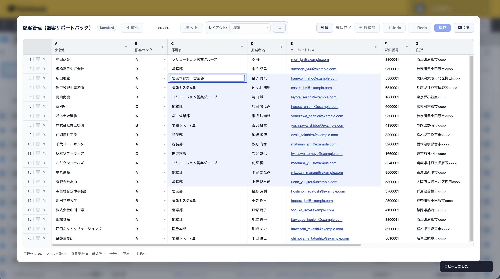

目的の場所を探す時間が積み重なる
あのアプリ、あの一覧、さっき見たレコード。kintoneの中には情報が多く、目的の場所を探す時間が意外とかかります。
 PlugBits Launcher
PlugBits Launcher
Chrome Extension for kintone
kintoneをひとりで回していると、
移動も入力も修正も、こまかい操作が一日中つきまといます。
PlugBits Launcherは、コマンドパレット・クイック入力・一括編集で、その手間をキーボードに置き換える無料のChrome拡張です。
実際の画面：サイドパネルから、アプリにもレコードにも一撃。
Problem
kintoneで仕事をしていると、
「あのアプリはどこだろう」「さっきのレコードをもう一度見たい」「承認待ちは何件あるだろう」
そんな小さな“探しもの”が、一日の中で何度も発生します。
あのアプリ、あの一覧、さっき見たレコード。kintoneの中には情報が多く、目的の場所を探す時間が意外とかかります。
承認待ちや未処理の件数を確認するために、ビューを開いて数を見にいくことがあります。
目的の場所を探す小さな時間が、作業の流れを少しずつ途切れさせます。
Solution
ブラウザにkintone専用のサイドパネルを作ることで、
アプリ、レコード、よく使う画面、残作業の件数にすぐアクセスできるようにします。
Free Features
PlugBits Launcherは、無料のChrome拡張として使えます。
「目的の場所にすぐ行ける」「今やるべき仕事が見える」という体験を、まず無料で提供します。
ビューの切り替え、別アプリへの移動、レコード作成まで、名前を打つだけで一発実行。
マウスに持ち替える回数が減り、kintoneの移動が体感で変わります。
kintoneのフォームは全員のために作られているので、項目はどうしても増えていきます。でも入力する瞬間に必要なのは、そのうちの数個だけ。
クイック新規レコードは、自分に必要なフィールドだけを、自分の決めた並び順で表示する入力モーダルです。目移りせず、上から順に、最短で登録が終わります。
一覧画面から離れず、保存後もスクロール位置はそのまま。

スプレッドシートは、kintoneを置き換えるものではなく、必要なときにさっと開ける補助ビューです。
元の画面を離れすぎず、一覧の中で必要な情報をまとめて確認できます。

よく使うアプリをアイコンで固定。目的のアプリへすぐ移動できます。

承認待ちなど特定ビューの件数を表示。今やるべき仕事の残数を確認できます。

気になるレコードはサイドパネルに固定。開きたいときにすぐ開けます。
Philosophy
業務ツールは会社が決めるもの。
でも、仕事の進め方は自分で整えられる。
PlugBitsは、あなたのブラウザに小さなコクピットをつくります。